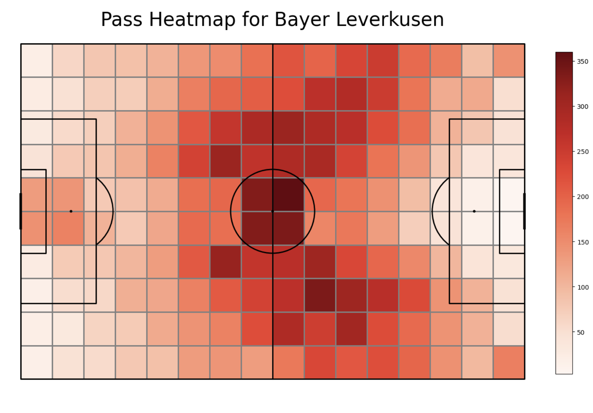

Bayer Levekusen through Data Lens
Xabi's men played 34 games in the Bundesliga where they won 28 matches and drew 6 matches, finishing the league with 90 points. After Xabi Alonso took charge in the previous season, they rose from the second bottom after eight Bundesliga games and finished the 2022-23 season in 6th place. The 2023-24 season has been an inspirational season for Bayer as they went on to win their first-ever Bundesliga, reminiscent of Leicester City's historic league-winning season. Let's see how they performed statistically in Bundesliga from a data standpoint.
Total Passes
Bayer Leverkusen played a total of 24,244 passes in the 34-match Bundesliga season, averaging around 713 passes per match. They distributed 12,627 passes in the first half and 11,572 passes in the second half, showing balanced control throughout both halves. However, they misplaced approximately 2,756 passes, which accounts for about 11% of their total passes. Despite this, Leverkusen has built a solid passing foundation, establishing a distinct identity in their style of play. In the second chart we can see that Granit Xhaka has played the highest number of passes. We can see the midfield being built around him. However, in the defensive third we can see Alejandro Grmaldo Garcia being the higherst pass maker along side Jonathan Tah.
.png)
.png)
.png)
Out of the total passes played by Bayer Leverkusen, we can see that most of the passes were ground passes and recovery passes. Other passes mentioned in the charts are very negligible. From this, we can say that Bayer Leverkusen relied heavily on their ground passes and passing in general.
Pass Heatmap
One of the most intersting things about the data provided by Statsbomb is that, the location for each of the events is given in a coordinates for a 120 X 80 units football pitch. Therefore, I present you the pass heat map for Bayer Leverkusen's 2023-24 season. we can see most of their passes are being played in the midfield third. Which means that, their midfield is doing most of their work. Kudos to the midfield for setting up a solid foundation.
Pass Network
A pass network defines the stable position of a team while making passing actions. The picture below shows the positions of the Bayer Leverkusen players, indicating their average position throughout the season during passes. In the network below, we can see Granit Xhaka, Alejandro Grimaldo García, Jonathan Tah, Edmond Fayçal Tapsoba, and Florian Wirtz having a huge marker. This indicates that they have been significantly involved in the passes played by the team as a whole. Moreover, we can see a thicker line between Granit Xhaka and Florian Wirtz. This indicates that there were a higher number of passes played between them compared to other players in the team. We can see the count of top ten passes played between two players. We can see that highest number of passes have been played by Exequiel Alejandro Palacios to Granit Xhaka.
Attack-Shots


Above shown are the shopt maps for Bayer Leverkusen in the Bundesliga 23-24 season. We can see that most of the shots came from a particular side of the D-box area. Similarly, majority of the goals also came from the same area. However, we also have been able to graph a probabilistic model that shows the probability of the shotes taken in certain areas of the pitch.
Shots-indepth
Expected goals (xG)
Expected goals is a statistical metric in football that defines the quality of the opportunity to score a goal. Thus, it defines the quality of the shots within a value of 0 to 1. Therefore, if the xG of a shot is 0.6, it means that the shot has a 60 percent chance of it being a goal. With the data provided by StatsBomb, the xG of each match can be calculated. Below, we can see the expected goals for two matches, these are the matches with the highest and the lowest expected goals for the Bayer Leverkusen which were 4.004015 and 0.528234. However, the actual score in each of the matches were 3-2 and 2-1 respectively in favor of Bayer Leverkusen.
Clustering Passes
There were 20 types of passes that were played by Bayer Leverkusen. The coordinates of the pass, the distance and the angle of the pass were considered to find different types of passes played by the team.
Corner Landing Zones and recepients
The heat maps below show the corner landing zones for Bayer Leverkusen in the Bundesliga season 2023-24. Moreovoer, we can also see the players who have played the corner pass and their recepeients from each of the sides. The top five players have been mentioned.
Corner Landing Zones and recepients
Since Xabi Alonso's Bayer Leverkusen relied heavily on their passing and build up play from behind. We can state that it is also important to understand who the goal keeper has passed the ball to and where. The map and the charts below show that the keeper Lukáš Hrádecký has played most of his passes to
Edmond Fayçal Tapsoba and least of his passes to Arthur Augusto de Matos Soares.